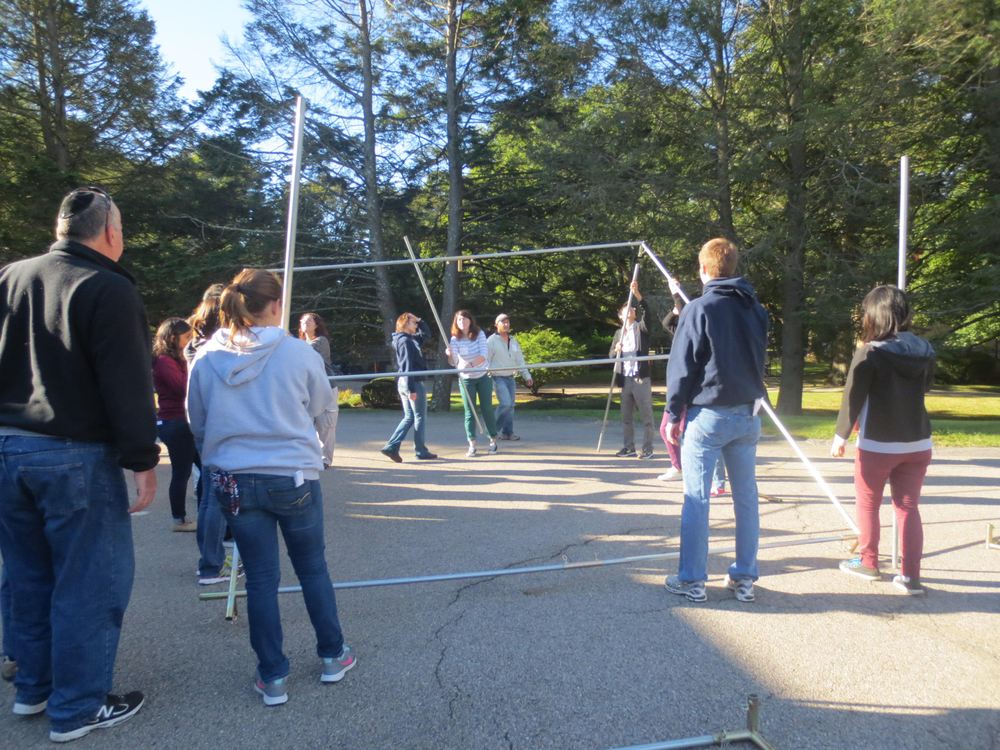
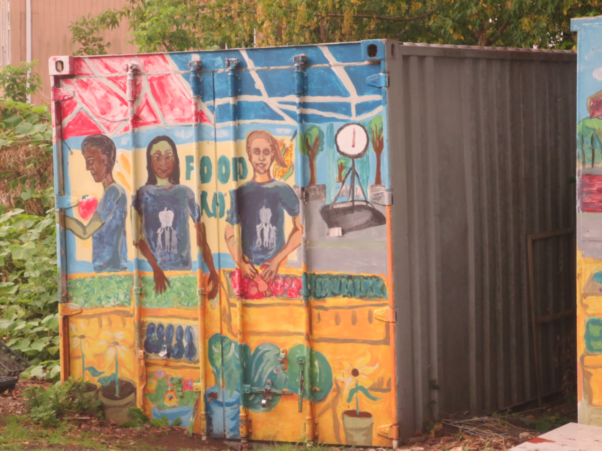
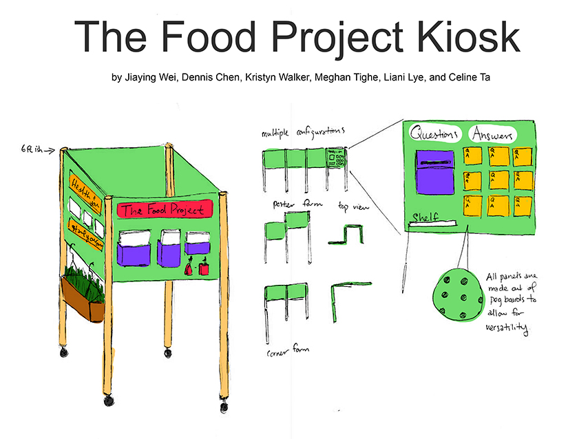
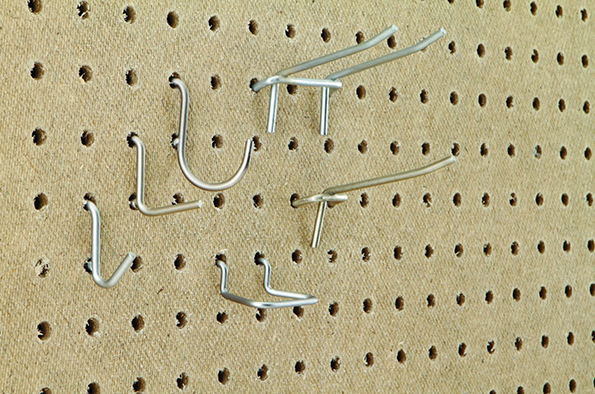

The Human Connection
The Human Connection is an anthropology class that's taught at Olin. At first glance anthropology and engineering don't seem related, but after spending a semester experiencing people's lives through another lens I've realized that it's important to care about who you're designing for.The first half of the semester we did various things such as build a sukkah at a Jewish temple, visit a Jain temple, shop at an ethnic grocery store, and play chair volleyball against senior citizens.

Our Anthro class raising a sukkah.
The Food Project Kiosk
During the second half of the semester our class split into three teams to tackle three different projects. I was part of The Food Project kiosk team.
The Food Project is an non-profit organization whose mission is to engage youth in personal and social change through sustainable agriculture. However, like many non-profits TFP has trouble outreaching to certain demographics, especially those living in lower income communities. Our goal as the kiosk team was to design a kiosk that TFP could use to outreach directly to these communities.
In some ways a kiosk is more effective in getting information out there than a website or a Facebook page. With the latter examples it's pretty difficult to stumble upon without prior interest. In addition many people might not have the time to leisurely browse the internet for hours on end. TFP plans to station the kiosk in strategic locations such as outside churches and at community events. This way, there's a much higher chance that people will learn about TFP's programs.
While designing our kiosk we kept several values in mind: mobility, versitility, and interactivity.

Mobility
We wanted our kiosk to be mobile because it was very likely that a single person would be staffing it. We wanted our kiosk to be easily collapsible and to shrink to a size that would fit inside the trunk of a car. In order to satisfy these requirements we included 270° hindges to our panels so it can be folded flat, and added threaded inserts to our support legs so they can be removed.Versatility
It was also important that our kiosk was versatile so that it could be best adapted to its environment and the target audience. By added those hinges to our kiosk, it allows it to be positioned in various different positions for various different presentation styles. The panels would be made out of pegboard which would allow things such as shelving and pamphlet boxes to be easily moved around. This is pegboard.
Interactivity
Interactivity is key in having the user remember the experience. One idea we suggested involved having questions such as "What Does Food Mean to You?" posted on the kiosk. People would stick their answers up on post it notes. By engaging the community in this conversation it can give TFP a better picture of who they are reaching and their point of view. Another potential idea is for TFP kiosk to have a planter. People interested in raising their own plants could take a cutting as well as an information card telling them how to take care of it. By taking home The Food Project experience home with them, they will have a lasting impression of TFP and their programs.
This is a physical sketch model of our kiosk.
This kiosk design will be handed off to The Food Project who plan on piloting it next year.